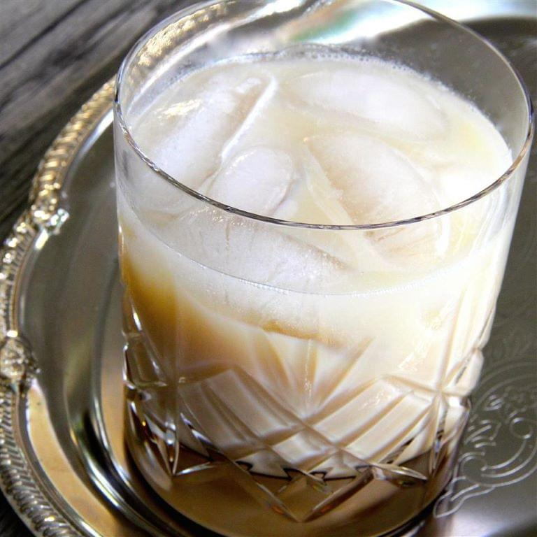

Colorado Pug cocktail recipe
Servings: 1 | Standard drinks 2

Description
Creamy, fizzy, and a little like a root beer float. Similar to a Colorado bulldog, but not quite.
Ingredients
- 1 cup ice, or as needed
- 1 (1.5 fluid ounce) jigger coffee-flavored liqueur (e.g., Kahlua)
- 1 (1.5 fluid ounce) jigger Irish cream liqueur (e.g., Baileys)
- 2 fluid ounces club soda, or as needed
Steps
- Fill an old-fashioned glass with ice
- Pour coffee-flavored liqueur and Irish cream liqueur over ice
- Top with club soda
- Stir
Return to index